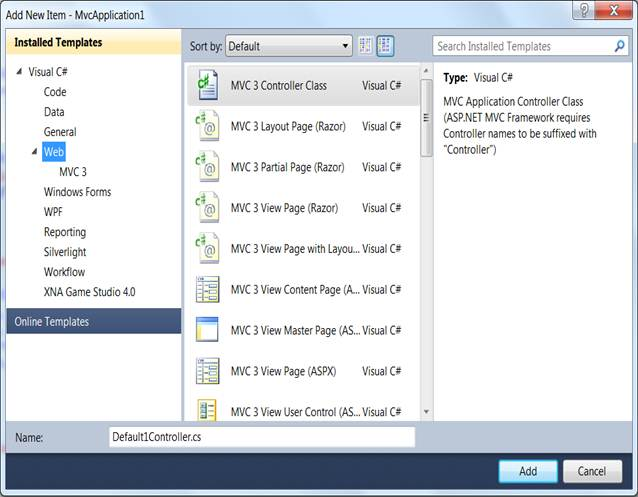
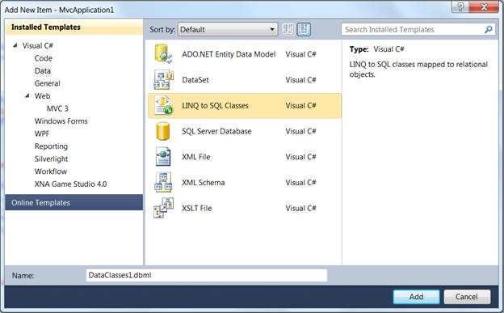
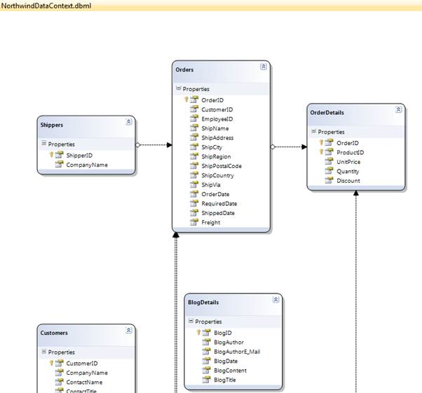

After an MVC application is created, a model has to be added. A model is a place from where the data can be fetched by the controller (Refer to Understanding ASP.NET MVC). This section guides you with the step-by-step procedure on adding a model.
1. On the Solution Explorer, right-click the Models folder.
 Note: A context menu will be
displayed.
Note: A context menu will be
displayed.

Figure 12: Context Menu Displayed on Clicking the Models Folder
2. On the Context menu, point to Add and click New Item.
Note: The Add New
Item {Application Name} is displayed. The Categories window displays
the components available under Visual C# program. The Templates window
displays the templates under the selected elements.

Figure 13: Add New Item Dialog Box
3. Click Data under Visual C#.
Note: The Visual
Studio installed templates are displayed in the Templates
window.

Figure 14: Connecting a Database to the Application
Note: This step is
optional and should be performed only when you want to attach a database with
the model. For details, see http://weblogs.asp.net/scottgu/archive/2007/05/29/linq-to-sql-part-2-defining-our-data-model-classes.aspx .
4. In the Name field, enter NorthwindDataClasses.
5. Click Linq to SQL Classes under Templates.
6. Finally, click Add.
Note: The data classes are added
under the Model folder.
7. In the Name box, enter NorthwindDataClasses.dbml and click the Add button.
Now Northwind LINQ to SQL classes are created in your application and the Object Relational Designer appears.
8. Drag and drop the tables from the Server Explorer window onto the Object Relational Designer to create LINQ to SQL classes that represent particular database tables. We need to add all the Northwind database tables onto the Object Relational Designer.
When completed, you should have the following:

Figure 15: NorthwindDataContext.dbml